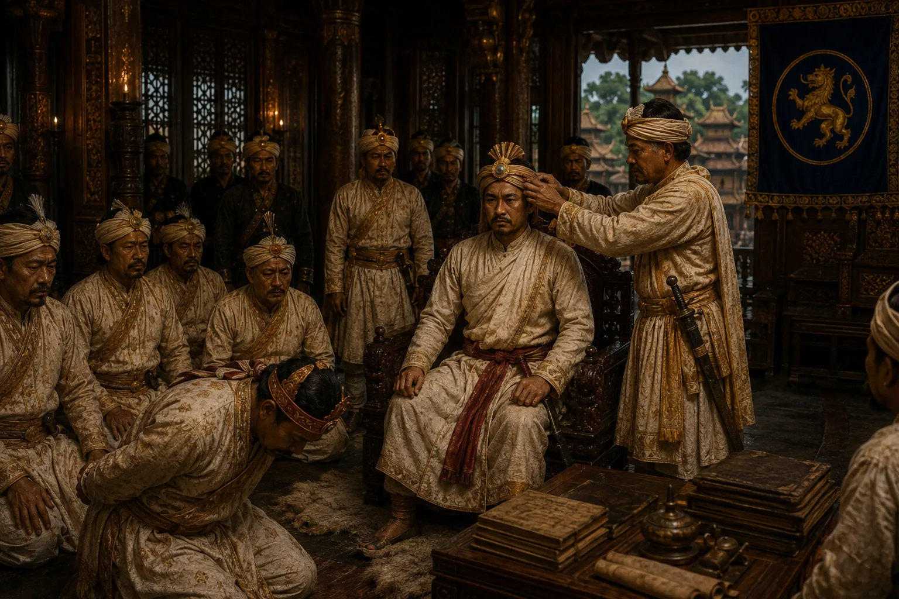

Deposition of Chandrakanta and Accession of Purandar Singha
February 1818 · The days of the Burmese

Ruchinath Burhagohain captures Jorhat, slits Chandrakanta's right ear to permanently disqualify him from kingship, and crowns Purandar Singha.
Sources have not yet been catalogued for this record.
People: Chandrakanta Singha (Sudingphaa), Purandar Singha, Ruchinath Burhagohain
Open this scene in the interactive archive · Follow this event on MAP